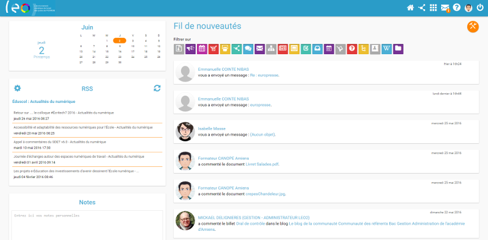

Présentation
OPEN ENT NG est l'Environnement Numérique de Travail open source à destination de la communauté éducative porté par l'association de collectivités territoriales "OPEN ENT". Voir la définition de l'ENT sur le site Eduscol
OPEN ENT NG est construit de manière modulaire et s'articule autour du moteur ENT Core afin de proposer une solution prête à l'emploi. Chaque nouveau module (qui étend la base ENT Core) est empaqueté sous forme d'une application indépendante ainsi il est possible de remplacer, d'ajouter ou de débrancher des applications.
Fonctionnalités
OPEN ENT NG propose actuellement la couverture fonctionnelle suivante.
| ENT Core | OPEN ENT NG : applications | OPEN ENT NG : connecteurs |
|---|---|---|
|
Annuaire
Alimentation (AAF 2D + manuelle) Sécurité Communication Console d'administration Portail personnalisable Espaces documentaire Fil de nouveautés Export Messagerie interne Marquage mesure d'audience CDC/MEN Serveur oAuth2 Serveur CAS |
Actualités
Blog Agenda Casier Forum Réservation de ressources Wiki RSS (widget) Signets (widget) Assistance (tickets) Sondages Site Web Internes (“Pages”) et pages publiques Statistiques internes Communautées (groupe collaboratif) Frise chronologique multimédia Mur collaboratif Carte mentale (ou carte heuristique) PAD (basé sur Etherpad) Poste-fichiers (partage de fichiers lourds sur l'ENT) |
Eliot SaaS
Pronote KNE CNS Le Site TV Universalis Maxicours / Educlever E-Sidoc Paraschool Webclasseur/Folios Cerise Pro Edumédia Scolinfo Charlemagne Madmagz Educagri PRO EPS Viescolaire.net Sacoche Faq2sciences ... |
Licence
Le code source d’OPEN ENT NG est distribué sous licence GNU Affero General Public License (AGPL).
Feuille de route 2O16
- Version 1 dernier semestre 2016
- Extension du périmètre fonctionnel : application mobile, visio-conférence etc...
Communauté
Collectivités utilisatrices de l'OPEN ENT NG :
- ENT LOL Poitou-Charente (en production)
- ENT LEO Picardie (en production)
- ENT Mon collège Essonne (en production)
- ENT du département de Seine et Marne (en production rentrée 2016)
- ENT de la ville de Paris (expérimentation)
Le projet est en développement actif pour la préparation de version 1.0. Nous sommes conscients du manque de documentation. Par conséquent n'hésitez pas à poser des questions ou à demander de l'aide sur le groupe de discussion OPEN ENT NG
- Le groupe de discussion OPEN ENT NG (Pour rejoindre la liste de diffusion envoyer un email à open-ent-ng+subscribe@googlegroups.com)
- Le dépôt GITHUB de la plate-forme OPEN ENT NG
Dans l'attente de l'adoption d'une organisation communautaire propre au projet, les pratiques et usages communs de Github sont appliqués.
Éléments d'architectures
Voici une présentation synoptique de la plate-forme sur les plans de l'information, fonctionnel et technique. Open ENT NG est motorisé par ENT Core. Pour consulter les détails techniques (guide de création d'application, documentation de références), reportez-vous à la documentation d'ENT Core
Plan de l'information
Il s'agit de l'organisation de l'information telle qu'elle est présentée à l'utilisateur. Les ressources sont accessibles par 3 angles :
- Le temps : par un Fil de nouveautés qui recense toute l'activité de l'ENT visible pour l'utilisateur
- Le réseaux : par les communautés (c'est à dire les espaces collaboratifs) de l'utilisateur
- Les applications : par les besoins en terme de services de l'utilisateur
Plan fonctionnel
C'est le découpage des services métiers empaquetés en applications et répartis par famille. Par exemple, les applications ENT Core font parties du moteur et doivent être compatibles avec le premier et second degré. Les applications OPEN ENT NG peuvent être spécifiques au second degré.
Plan technique
C'est une vision des composants logiciels (bases de données, middleware, framework et applications) et de leur agencement. ENT Core étend Vert.x d'un framework WEB MVC et d'un framework d'extension pour construire des applications qui répondent à un cahier des charges "éducation". Sringboard est un conteneur de personnalisation (thème et configuration solution) qui récupère et assemble les composants d'OPEN ENT NG (depuis des dépôts de binaire maven) et lance la plate-forme.